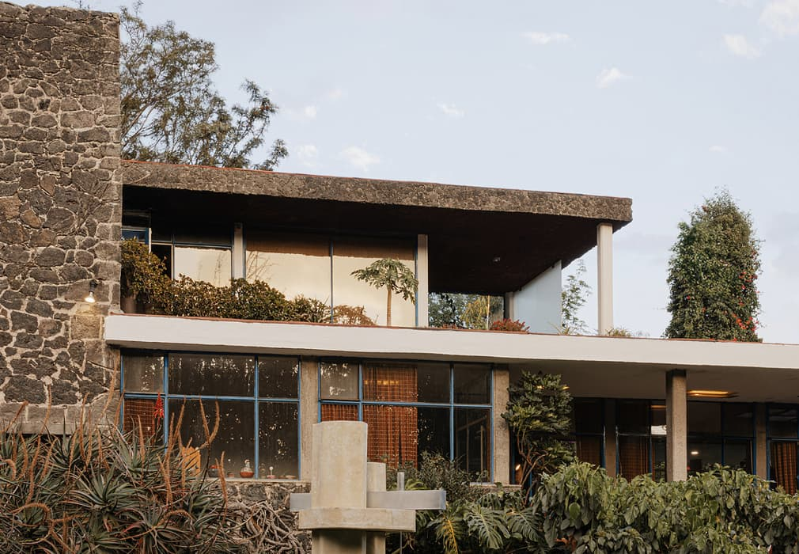
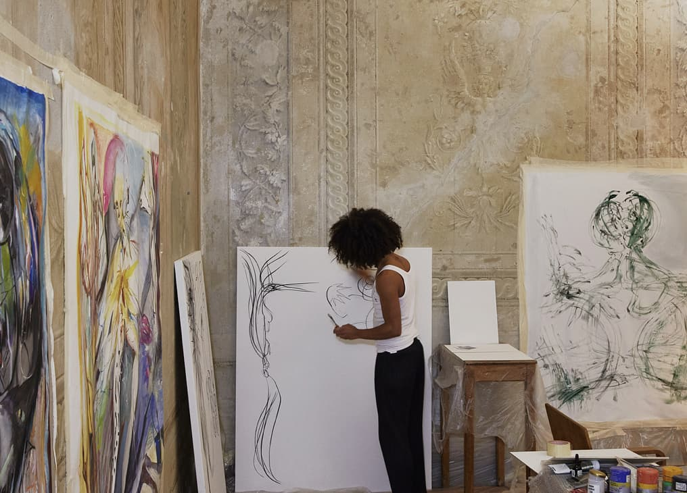
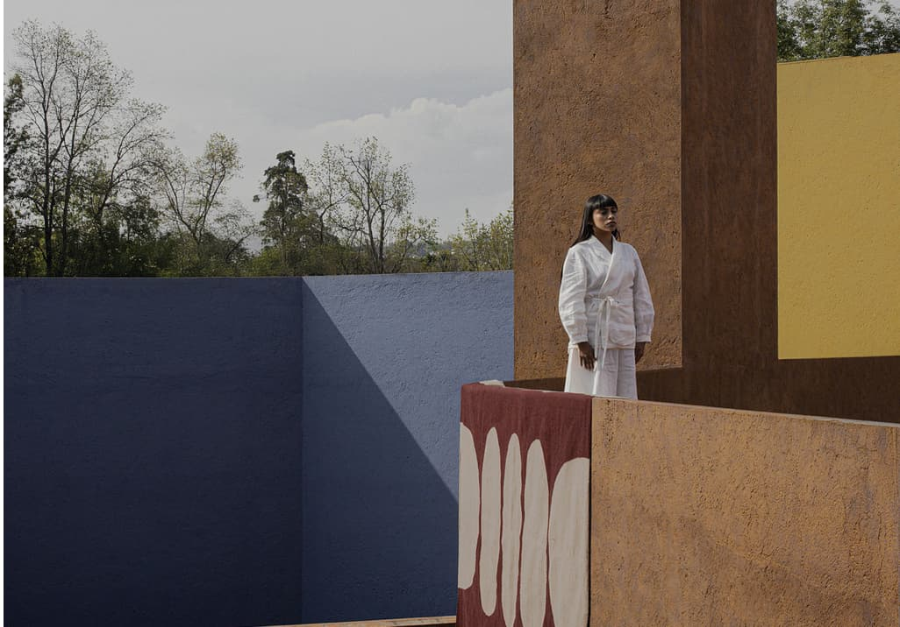

Alejandro Ramírez Orozco

El fotógrafo Alejandro Ramírez Orozco desarrolla una práctica visual centrada en la exploración de la identidad, el cuerpo y la construcción de narrativas contemporáneas. Su trabajo se sitúa entre lo artístico y lo editorial, generando imágenes con una fuerte carga estética y conceptual. A través de la fotografía, construye atmósferas que invitan a la interpretación, donde la imagen se convierte en un medio para cuestionar y representar lo personal y lo colectivo.
Diseños

Fotografia a Estudio 84 / Casa Estudio Max Cetto En Cuidad de México, Febrero 2025

Fotografia a Samuel de Saboia / Numeroventi En Firenze, Italia, Abril 2023

Fotografia a Casa Del Atrio / San Ángel En Cuidad de México, Enero 2025